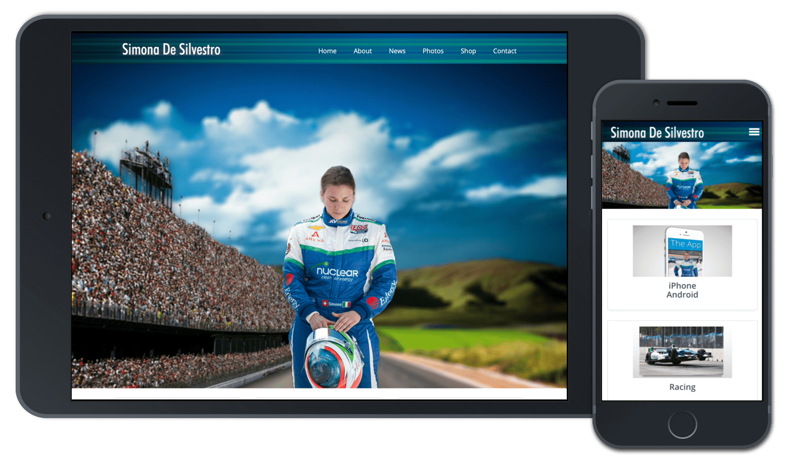

Simona De Silvestro
The official 2013 website

The official 2013 website
After a better 2012 year, Simona switched over to KV Racing due to HVM Racing being stuck with Lotus Racing cars. KV racing offered Honda race-cars and a racing partner Tony Kannan; this meant that Simona needed new branding and colors fast due to switching racing teams.
According google's research article called "Users love simple familiar designs", it discusses that the average user makes a gut feeling on whether or not they want to stay on a website within 50 milliseconds. So the first impression of a website is significant, and it depends on so many different factors such as site structure, colors, spacing, symmetry, amount of text, fonts, and more.
When I started designing Simona's website, it was important to make a simple and familiar design but visually grabbed your attention. I wanted to follow the simple traditional logo to the left and the menu to the right. Then have a visually capturing hero image and three important media links that we found users going to the most on previous websites. Those media links included the mobile app downloads for iPhone and Android devices, the indy car website to allow users to see Simona's racing stats, and the commercial that gave an overview of Simona's career highlights.
The last part of the front page is based on showing off Simona's sponsors. You might be thinking... users don't want to see that. Technically, clicks were not as high on those links as they were on other links. However, in the racing world, it is almost a given silent rule that you always feature your sponsors upfront because they are the ones supporting you. So this goes back to the google article of familiar design because every Indy Car driver's website shows off their sponsors.
When it came to coloring the wireframes, I had a color selection of only three colors: dark blue, blue, green, and white.
Originally the header was just a blue background, but I found that to be really uninspiring. So I added some green highlight stripes and made the opacity layers different from each green stripe. The last thing I did was add a ray of light photoshop layer with a 35% opacity to give the header a fade effect on the sides.
I went through hundreds of photos that were shot on a practice day for Simona. The photo I came across was one that many would consider being just a throw-away shot. It was Simona looking down at her helmet in deep concentration. I thought this is the shot I have looking for. A stronger determined to win Simona.
The problem with the photo itself was the shot did not tell a story. I was looking to tell a story of a brighter, sunnier day of victory ahead. Unfortunately, the photo did not convey that.
So I went to photoshop and began splicing elements of photography together. The Indy Car audience is from another photo; the blue skies and road are from a separate photo. Once I had all these objects into place, the problem is none of them seemed like they fit together. The trick to blending them all was using the blur tool on all the objects except Simona. This way, Simona would be the absolute focus of the photo, but the background would create a sense of awe.
What excited me about doing Simona De Silvestro's website in 2013 was learning how to do responsive design. Instead of following the same path as everyone else using Bootstrap, I decided to build the website from the ground up.
I did this for two reasons:
While looking through my old code, the most interesting thing I did was create media queries for desktops, tablets, and phones. Here is a look at my pre sass file structure for my CSS stylesheets.
/*
* Main stylesheet
*
* -----> SUMMARY <-----
* 1. MAIN
* 2. NORMALIZED STYLES
* 3. HEADER
* 4. NAVIGATION
* 5. MAIN CONTENT
* 6. SIDEBAR
* 7. BUTTONS
* 8. FOOTER
* 9. TABLET
* 10. MOBILE
*/
Simona LOVED it. Seriously she went nuts over it. Which making the client happy is one of my favorite things to do. It was a great year for Simona too. After 2013, Simona De Silvestro went back to Europe to become the first-ever female Formula One driver.